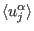
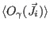
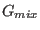
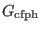
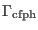
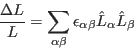

Next: Single Ion Modules Up: Crystal Field Phonon Interaction Previous: The total Crystal field Contents Index
Technically the Hamiltonian (106) is of the general form for
McPhase [35], with single
ion and interaction terms. The corresponding mean field procedure can be done by an internal single ion module
”epsilon”, which represents not an ion, but the
strain. Given
 and
 and
appropriate interaction constants to the ”epsilon” from (95) and (103), respectively,
the right side in (108) can be evaluated in each mean field loop
in module ”epsilon” function Icalc. Then elastic constants in (108) can be used to calculate
a new strain  , a six component vector. Via the aforementioned appropriate
interaction constants (from (96) and (104)) the strain will produce mean
fields on lattice displacements and magnetic charge density (crystal field) and so on ...
The free energy returned by the module ”epsilon” should correspond to the elastic energy
per unit cell given by equation (94).
, a six component vector. Via the aforementioned appropriate
interaction constants (from (96) and (104)) the strain will produce mean
fields on lattice displacements and magnetic charge density (crystal field) and so on ...
The free energy returned by the module ”epsilon” should correspond to the elastic energy
per unit cell given by equation (94).
For the dynamics the ”epsilon” module should not
yield any single ion excitations. The excitations can be calculated without taking into account the
term  , because this is linear in the displacement operators and in the harmonic
approximation the spectrum of the harmonic Einstein oscillator will not change with such an
internal force. The strain has only to be taken into account as a linear modification of the crystal field
parameters in the first term of equation (103). This is done automatically by creating the
file mcdisp.mf with the ”epsilon” module.
, because this is linear in the displacement operators and in the harmonic
approximation the spectrum of the harmonic Einstein oscillator will not change with such an
internal force. The strain has only to be taken into account as a linear modification of the crystal field
parameters in the first term of equation (103). This is done automatically by creating the
file mcdisp.mf with the ”epsilon” module.
Elastic constants and mixing term parameters  should be created with the option -bvk of the program makenn and stored in the file mcphas.j. Using makenn with the option -cfph will create the magnetoelastic parameters  and .
If the program mcphas is started with option -doeps
and it finds elastic constants in the input file mcphas.j, it
will use these and determine selfconsistently the strain  by solving equations
(108). Elastic energy and strain tensor are stored in results/mcphas.fum.
by solving equations
(108). Elastic energy and strain tensor are stored in results/mcphas.fum.
In this way it should be possible to model Jahn Teller transitions, phase diagrams, magnetostriction, thermal expansion (magnetic part) and dynamics consistently based only on point charges and Born von Karman springs.
The length change  of a sample in a dilatometer experiment
can be calculated from the strain tensor components
using 15
of a sample in a dilatometer experiment
can be calculated from the strain tensor components
using 15
|  | (104) |
where denotes the unit vector in the direction of measurement.
Utopia: in a further step stress tensor components could be envisaged to act similar as an external magnetic field in McPhase, these will only act on the ”espilon” module and on no other module. The equations given above have to be adapted accordingly and then it should be possible to calculate in addition to magnetic phase diagrams also stress dependence of Jahn Teller transitions and excitations.